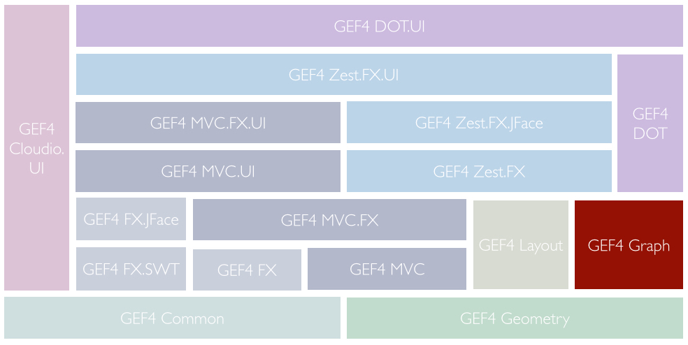
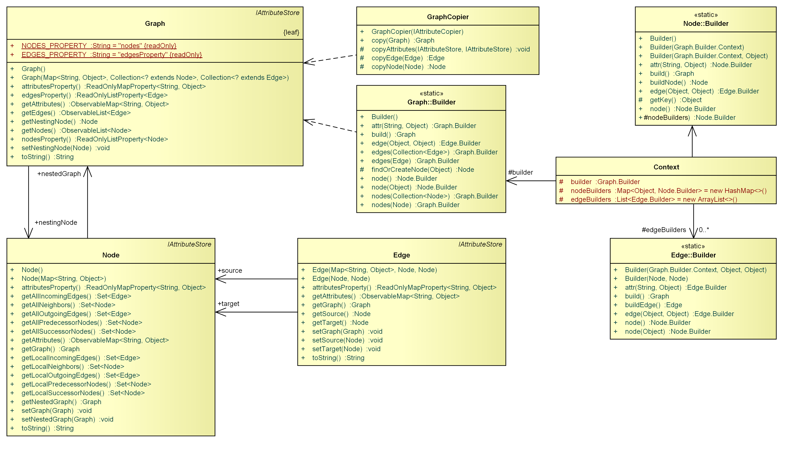

Note to non-wiki readers: This documentation is generated from the Eclipse wiki - if you have corrections or additions it would be awesome if you added them in the original wiki page .
The GEF4 Graph component provides a simple, UI-independent graph model. It consists of the single Graph module. There are also a couple of undeployed Graph Examples.

The Graph module of GEF4 Graph provides the single {Root} package, which delivers a generic graph model representation and related utility classes.
The {Root} package provides a simple graph model and a support class to copy/merge such models.

A Graph serves as a container for Nodes and Edges. Additionally, a Graph can be
nested inside a
nesting Node, so that sub-graphs can be properly represented.
Moreover, arbitrary attributes can be set on Graphs, Nodes, and Edges, as they all implement
org.eclipse.gef4.common.attributes.IAttributeStore. As all attributes are maintained in observable collections/properties, listeners can be registered to react to changes. The concrete attributes that are used are outside the scope of the
GEF4 Graph component. The DOT importer of the
GEF4 DOT component, e.g. adds DOT-specific attributes to the Graph it creates, the
GEF4 Zest component uses visualization-specific attributes, which determine the concrete visualization.
A Graph can be easily constructed using a Graph.Builder:
Graph graph = new Graph.Builder()
.attr(DotAttributes._TYPE__G, DotAttributes._TYPE__G__DIGRAPH)//
.attr("g_attr", "g1").node("n1")//
.attr(DotAttributes.LABEL__GNE, "1")//
.attr(DotAttributes.ID__GNE, "1")//
.node("n2")//
.attr(DotAttributes.LABEL__GNE, "2")//
.attr(DotAttributes.ID__GNE, "2")//
.node("n3")//
.attr(DotAttributes.LABEL__GNE, "3")//
.attr(DotAttributes.ID__GNE, "3")//
.edge("n1", "n2").attr(DotAttributes.LABEL__GNE, "e1")
.edge("n1", "n3").build();
It allows to chain Node.Builders, which can be made identifiable through an arbitrary Object key (here "n1", "n2", "n3"), and Edge.Builders, which can refer to identifiable Node.Builders to build their source and target elements, so even a complex wired graph can be created through a single builder chain. This is very useful when creating a Graph model that wraps a given semantic model (here a Statechart, which comprises States and Transitions):
Graph.Builder builder = new Graph.Builder().attr(ZestProperties.LAYOUT_ALGORITHM__G, new RadialLayoutAlgorithm());
for (State s : statechart.getStates()) {
// use the State as key for the Node builder
builder.node(s).attr(ZestProperties.LABEL__NE, s.getName());
}
for (Transition t : statechart.getTransitions()) {
// build an Edge for each Transition, referring to the Node builders of its source and target States
builder.edge(t.getSource(), t.getTarget()).attr(ZestProperties.LABEL__NE, "");
}
Graph graph = builder.build()
A GraphCopier is a utility class to copy/merge graphs. It requires an
org.eclipse.gef4.common.attributes.IAttributeCopier to copy/transfer the attributes of the Graph, Node, and Edge elements that are copied.